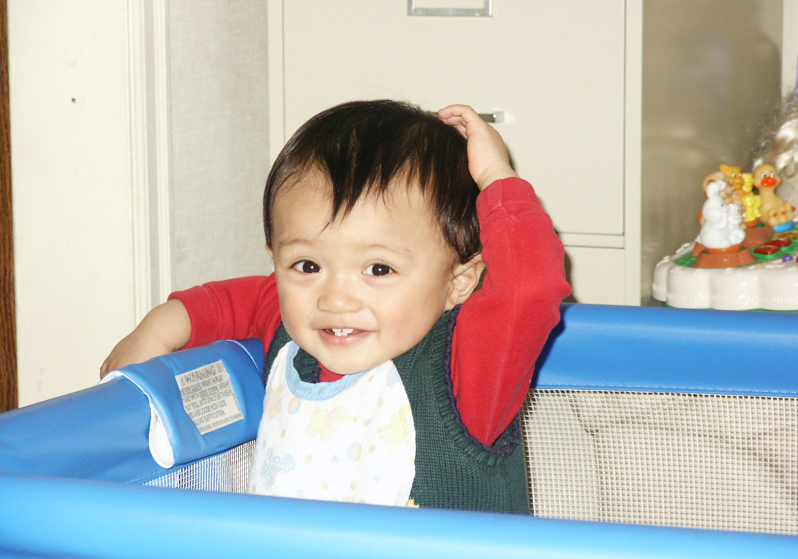

Interview
Age: 1
(Interview with Brother)- So, tell me about how I learned to walk.
- You mean, how I taught you?
- Yeah.
- Well, I would grab you by your little sausage-link arms, then lift you up so that your feet were setting between mine. Then, I just started walking, sometimes you went along with me.
- Explain, for the record, what you mean by "sometimes."
- Well, sometimes - a lot of the time - you would just decide "nope, no more walking." One moment you'd be teetering along on your little legs, then the next you'd just flop. Like your legs didn't work anymore. "That's it, that's enough for today." And you'd look up at me with your chipmunk grin, and you'd go like [imitates giggle]
- So, would you say that I learned how to walk? Would you say that I was properly developing my motor skills?
- Kind of. You knew how to walk, in a sense. You just didn't want to do it, and you weren't very good at it. But yeah, before I knew it you were running around all on your own. As soon as you could walk without falling down every 5 seconds like you did with me, none of us could get you to stop running around.
Piaget's Commentary
In the sensorimotor stage, infants interact with the world with their senses and bodies. Part of being able to interact with the world with their bodies involves, inevitably, learning how to walk. The fact that this individual was either unable or unwilling to walk indicates that the sensorimotor stage was not yet complete, as the ability to interact with the world without walking is severely limited.
